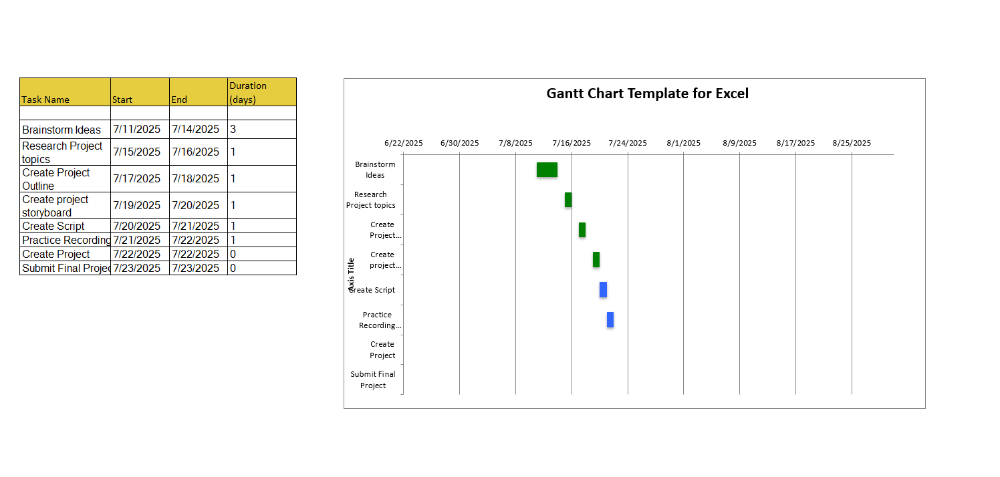

Final Project idea: I want to mostly focus on HTML and CSS, because I find those to be the most interesting, and I believe I can do a lot more show and tell for the presentation part of the final project with HTML and css. I can show videos of me coding in HTML, showing off how the code works, talking about what I’m doing and what different tags mean, and how they function, then I can stylize everything using css. I’ll talk about many different parts of the course, about what I learned how to do, and what I learned about, but I feel like the focus will be on HTML and css. What I learned: I was able to learn the basics of excel because of this assignment, while making the Gantt chart, which was kind of fun, I always thought of excel sheets as something super business orientated and somewhat foreign, but it was easy to use. Gant charts seem like an easy way to plan projects and manage my time, which is something I will use in the future, because my time management skills are lacking. I’m also learning how to take bits and pieces of different lessons from the course work and put it all together, to create a bigger and better product.
